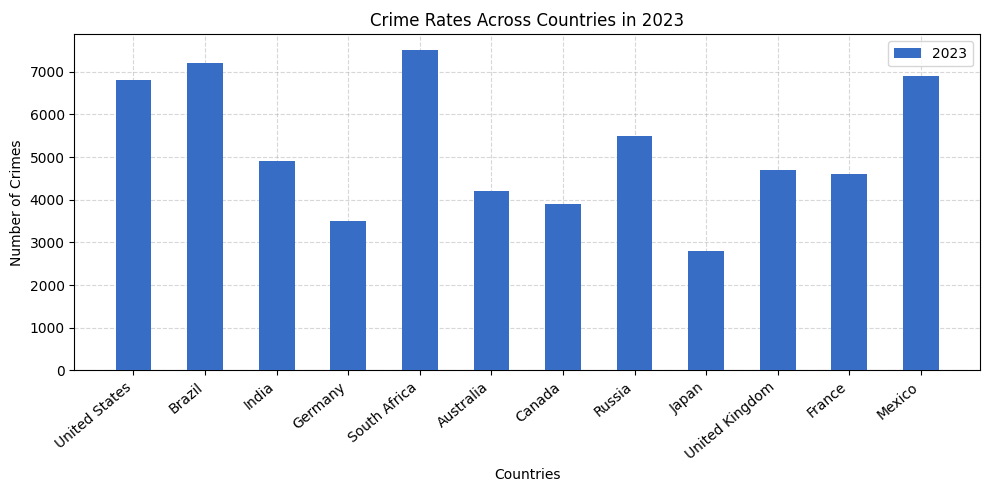
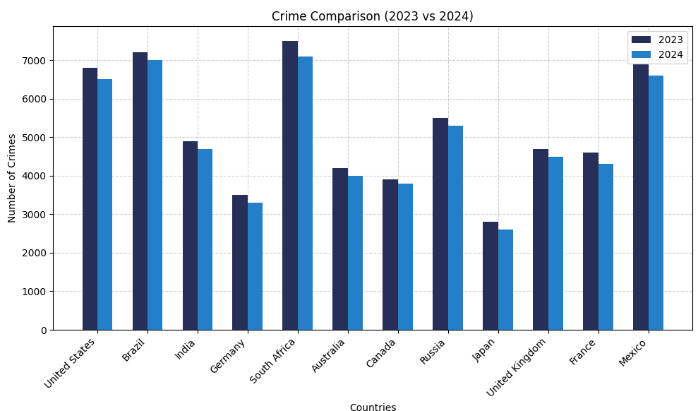

Learn Bar Graphs with a Crime Data Analysis Project in Python
Bar graphs are super handy for comparing stuff — like which country has more crime and who’s leading the chaos chart. Instead of drowning in a sea of boring numbers, you get clean visuals that actually make sense. They're simple to create, fun to read, and lowkey make you look smart while analyzing serious stuff. So yeah, bar graphs? Totally underrated.
Why Use Bar Graphs?
Bar graphs aren't just for school projects — they’re your go-to tool when you wanna flex data in a clean and loud way. They help you spot trends, compare stuff at a glance, and tell a story without saying a word. Whether it's crime stats, fav snacks, or top songs — bar graphs make boring numbers look cool and easy to digest. If clarity had a visual BFF, it's definitely a bar graph.
What You’ll Learn
- How to take boring numbers and turn them into 🔥 bar graphs
- Learn to visualize real-world crime data from multiple countries
- Plot and compare data from 2023 vs 2024 — side-by-side!
- Add colors, gridlines & labels to make graphs clean and eye-catching
- Understand bar graph basics without any fluff — just pure logic
Step-by-Step Code Example
Here’s a simple example of how to create a bar graph in Matplotlib:
🔹 For plotting only one data at a time (e.g., 2023):
import matplotlib.pyplot as plt
import numpy as np
countries = [
"United States", "Brazil", "India", "Germany", "South Africa", "Australia",
"Canada", "Russia", "Japan", "United Kingdom", "France", "Mexico"
]
crime_2023 = [6800, 7200, 4900, 3500, 7500, 4200, 3900, 5500, 2800, 4700, 4600, 6900]
plt.figure(figsize=(10, 5))
plt.bar(countries, crime_2023, label="2023", zorder=3, width=0.5, color="#376dc5")
plt.xticks(rotation=40, ha='right')
plt.title("Crime Rates Across Countries in 2023")
plt.xlabel("Countries")
plt.ylabel("Number of Crimes")
# Lighter grid behind bars
plt.grid(True, linestyle='--', alpha=0.5, zorder=0)
plt.legend()
plt.tight_layout()
plt.show()
And here’s what we got :

- Imports: We bring in
matplotlib.pyplotfor plotting andnumpy(just in case we need it for advanced stuff later). - Data Setup: We create two lists — one for
countriesand another for their crime stats in2023. - Chart Size:
figsize=(10, 5)makes sure our chart has enough space and doesn’t look cramped. - Plotting Bars:
plt.bar()draws the bars. We use a clean blue color (#376dc5) and setwidth=0.5so they’re not too chunky. - Rotation Fix:
plt.xticks(rotation=40)tilts the x-axis labels so they don’t overlap — clean and readable. - Labels & Title: Add labels using
plt.xlabel(),plt.ylabel(), andplt.title()to give context. - Light Grid:
plt.grid(True, alpha=0.5)adds subtle horizontal lines that help read values without being distracting. - Legend: Even though there's only one year now,
plt.legend()helps when comparing years later. - Layout Fix:
plt.tight_layout()prevents text from getting cut off — super useful for labels and titles. - Show It: Finally,
plt.show()displays the plot — your clean and clear visual!
🔹 For plotting 2023 & 2024 side by side (dual plots):
import matplotlib.pyplot as plt
import numpy as np
countries = [
"United States", "Brazil", "India", "Germany", "South Africa", "Australia",
"Canada", "Russia", "Japan", "United Kingdom", "France", "Mexico"
]
crime_2023 = [6800, 7200, 4900, 3500, 7500, 4200, 3900, 5500, 2800, 4700, 4600, 6900]
crime_2024 = [6500, 7000, 4700, 3300, 7100, 4000, 3800, 5300, 2600, 4500, 4300, 6600]
plt.figure(figsize=(10, 6))
x = np.arange(len(countries))
width = 0.3
plt.bar(x - width / 2, crime_2023, width=width, label="2023", color="#262F58", zorder=3)
plt.bar(x + width / 2, crime_2024, width=width, label="2024", color="#247FC9", zorder=3)
plt.xticks(x, countries, rotation=45, ha='right')
plt.title('Crime Comparison (2023 vs 2024)')
plt.xlabel("Countries")
plt.ylabel("Number of Crimes")
plt.grid(True, linestyle='--', alpha=0.6, zorder=0)
plt.legend(loc="upper right")
plt.tight_layout()
plt.show()
And here’s what we got :

- Double Trouble (aka Year Comparison): We’re plotting both
crime_2023andcrime_2024side by side so you can spot the glow-up (or crime-down) for each country at a glance. - X-axis Vibes with
np.arange():x = np.arange(len(countries))basically gives each country its own stage position on the x-axis. It’s like assigning seats at a concert — no chaos, just clean spacing. - Side-by-Side Bars = Better Visuals: We're not stacking these bars, nah — we're placing them side by side like besties.
x - width / 2handles 2023,x + width / 2takes care of 2024. Boom — instant side-by-side clarity. - Bar Width On Point:
width = 0.3keeps it tight and tidy. Not too thicc, not too skinny — just the right fit so bars don’t bump into each other like it's rush hour. - Color Coding, But Make It Aesthetic: We gave 2023 a moody navy blue (
#262F58) and 2024 a poppin’ sky blue (#247FC9). Helps your brain process the data without crying. - Legend Placement (Because UX Matters): Tossed the legend in the top right with
loc="upper right". Keeps it outta the way but still visible enough to decode the chart like a pro.
More educational content :